전산응용기계제도기능사 (2013-10-12 기출문제)
1과목: 기계재료 및 요소
1. 다음 중 로크웰경도를 표시하는 기호는?
- HBS
- HS
- HV
- HRC
(정답률: 77%)

2. 형상기억합금의 종류에 해당되지 않는 것은?
- 니켈-티타늄계 합금
- 구리-알루미늄-니켈계 합금
- 니켈-티타늄-구리계 합금
- 니켈-크롬-철계 합금
(정답률: 57%)
3. 열가소성 수지가 아닌 재료는?
- 멜라민 수지
- 초산비닐 수지
- 폴리에틸렌 수지
- 폴리염화비닐 수지
(정답률: 55%)
4. 베릴륨 청동 합금에 대한 설명으로 옳지 않는 것은?
- 구리에 2~3%의 Be를 첨가한 석출경화성 합금이다.
- 피로한도, 내열성, 내식성이 우수하다.
- 베어링, 고급 스프링 재료에 이용된다.
- 가공이 쉽게 되고 가격이 싸다.
(정답률: 70%)
5. 주철의 성장 원인 중 틀린 것은?
- 펄라이트 조직 중의 Fe3C 분해에 따른 흑연화
- 페라이트 조직 중의 Si의 산화
- A1 변태의 반복과정중에서 오는 체적변화에 기인되는 미세한 균열의 발생
- 흡수된 가스의 팽창에 따른 부피의 감소
(정답률: 65%)
6. Al-Cu-Mg-Mn의 합금으로 시효경과 처리한 대표적인 알루미늄 합금은?
- 두랄루민
- Y-합금
- 코비탈륨
- 로우엑스 합금
(정답률: 70%)
7. 다이캐스팅용 합금의 성질로서 우선적으로 요구되는 것은?
- 유동성
- 절삭성
- 내산성
- 내식성
(정답률: 56%)
8. 스프링에서 스프링 상수(k) 값의 단위로 옳은 것은?
- N
- N/㎜
- N/㎟
- ㎜
(정답률: 66%)
9. 다음 ISO 규격 나사 중에서 미터 보통 나사를 기호로 나타내는 것은?
- Tr
- R
- M
- S
(정답률: 83%)
10. 분할핀에 관한 설명이 아닌 것은?
- 테이퍼 핀의 일종이다.
- 너트의 풀림을 방지하는데 사용된다.
- 핀 한쪽 끝이 두 갈래로 되어 있다.
- 축에 끼워진 부품의 빠짐을 방지하는데 사용된다.
(정답률: 59%)
2과목: 기계가공법 및 안전관리
11. 하중 3000N이 작용할 때, 정사각형 단면에 응력 30 N/cm2이 발생했다면 정사각형 단면 한 변의 길이는 몇 ㎜ 인가?
- 10
- 22
- 100
- 200
(정답률: 67%)
12. 축이음 설계시 고려사항으로 틀린 것은?
- 충분한 강도가 있을 것
- 진동에 강할 것
- 비틀림각의 제한을 받지 않을 것
- 부식에 강할 것
(정답률: 68%)
13. 모듈이 m인 표준 스퍼기어(미터식)에서 총 이 높이는?
- 1.25m
- 1.5708m
- 2.25m
- 3.2504m
(정답률: 76%)
14. 레디얼 볼 베어링 번호 6200의 안지름은?
- 10 ㎜
- 12 ㎜
- 15 ㎜
- 17 ㎜
(정답률: 86%)
15. 3줄 나사, 피치가 4㎜ 인 수나사를 1/10 회전시키면 축 방향으로 이동하는 거리는 몇 ㎜ 인가?
- 0.1
- 0.4
- 0.6
- 1.2
(정답률: 78%)
16. 드릴링 머신 1대에 여러 개의 스핀들을 설치하고 1개의 구동축으로 유니버셜 조인트를 이용하여 여러 개의 드릴을 동시에 구동시키는 드릴링 머신은?
- 직접 드릴링 머신
- 레이디얼 드릴링 머신
- 다축 드릴링 머신
- 다두 드릴링 머신
(정답률: 63%)
17. 마이크로미터의 구조에서 부품에 속하지 않는 것은?
- 앤빌
- 스핀들
- 슬리브
- 스크라이버
(정답률: 63%)
18. 밀링 머신에서 직접 분할법으로 8등분을 하고자 한다. 직접 분한판에서 몇 구멍씩 이동시키면 되는가?
- 3구멍
- 5구멍
- 8구멍
- 12구멍
(정답률: 51%)
19. 연삭 숫돌의 구성 3요소가 아닌 것은?
- 입자
- 결합제
- 절삭유
- 기공
(정답률: 77%)
20. 바이트의 인선과 자루가 같은 재질로 구성된 바이트는?
- 단체 바이트
- 클램프 바이트
- 팁 바이트
- 인서트 바이트
(정답률: 43%)
21. 금속으로 만든 작은 덩어리를 가공물 표면에 투사하여 피로강도를 증가시키기 위한 냉간 가공법은?
- 숏 피닝
- 액체호닝
- 수퍼피니싱
- 버핑
(정답률: 54%)
22. 내면 연삭 작업 시 가공물은 고정시키고 연삭숫돌이 회전운동 및 공전운동을 동시에 진행하는 연삭방법은?
- 유성형
- 보통형
- 센터리스형
- 만능형
(정답률: 36%)
23. 선반으로 기어절삭용 밀링커터를 제작하려고 할 때 전면 여유각을 가공하기에 가장 적합한 작업은?
- 모방절삭(copying) 작업
- 릴리빙(relieving) 작업
- 널링(knurling) 작업
- 터렛(turret) 작업
(정답률: 45%)
24. 공구와 가공물의 상대운동이 웜과 웜기어의 관계로 기어를 절삭할 수 있는 공작기계는?
- 펠로스 기어 셰이퍼
- 마그 기어 셰이퍼
- 라이네케르 베벨기어 셰이퍼
- 기어 호빙 머신
(정답률: 54%)
25. 여러가지 종류의 공작기계에서 할 수 있는 가공을 1대의 기계에서 가능하도록 만든 것은?
- 단능 공작기계
- 만능 공작기계
- 전용 공작기계
- 표준 공작기계
(정답률: 82%)
3과목: 기계제도
26. 모양에 따른 선의 종류에 대한 설명으로 틀린 것은?
- 실선 : 연속적으로 이어진 선
- 파선 : 짧은 선을 일정한 간격으로 나열한 선
- 1점 쇄선 : 길고 짧은 2종류의 선을 번갈아 나열한 선
- 2점 쇄선 : 긴선 2개와 짧은 선 2개를 번갈아 나열한 선
(정답률: 75%)
27. 기준 A에 평행하고 지정길이 100㎜에 대하여 0.01㎜의 공차값을 지정할 경우 표시방법으로 옳은 것은?
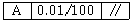
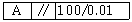
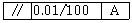
(정답률: 79%)
28. 다음 중 구상흑연 주철품 재질 기호는?
- SC 410
- GC 300
- GCD 400 - 18
- SF 490 A
(정답률: 45%)
29. 다음 중 치수기입의 원칙 설명으로 틀린 것은?
- 설계자의 특별한 요구사항을 치수와 함께 기입할 수 있다.
- 도면에 나타내는 치수는 특별히 명시하지 않는 한 도시한 대상물의 마무리 치수를 표시한다.
- 치수는 되도록이면 정면도, 측면도, 평면도에 분산하여 기입한다.
- 치수는 되도록이면 계산할 필요가 없도록 기입하고 중복되지 않게 기입한다.
(정답률: 82%)
30. 그림과 같은 단면도(빗금친 부분)을 무엇이라 하는가?
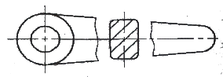
- 회전 도시 단면도
- 부분 단면도
- 온 단면도
- 한쪽 단면도
(정답률: 65%)
31. 반복도형의 피치를 잡은 기준이 되는 선은?
- 가는 실선
- 가는 파선
- 가는 1점 쇄선
- 가는 2점 쇄선
(정답률: 68%)
32. 투상도의 표시 방법에서 보조 투상도에 관한 설명으로 옳은 것은?
- 복잡한 물체를 절단하여 나타낸 투상도
- 경사면부가 있는 물체의 경사면과 맞서는 위치에 그린 투상도
- 특정 부분의 도형이 작아서 그 부분만을 확대하여 그린 투상도
- 물체의 홈, 구멍 등 특정 부위만 도시한 투상도
(정답률: 67%)
33. 다음의 내용과 가장 관련이 있는 가공에 의한 커터의 줄무늬 방향 기호는?
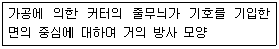
- ⊥
- X
- M
- R
(정답률: 63%)
34. 다음 중에서 '제거 가공을 허용하지 않는다'는 것을 지시하는 기호는?
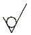
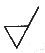
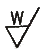
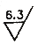
(정답률: 87%)
35. 제3각법으로 투상한 그림과 같은 도면에서 누락된 평면도에 가장 적합한 것은?
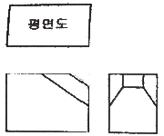
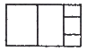
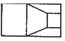
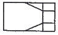
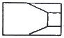
(정답률: 63%)
36. 다음은 3각법으로 정투상한 도면이다. 등각투상도로 맞는 것은 어느 것인가?
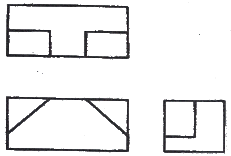
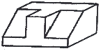
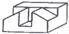
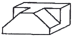
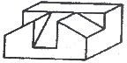
(정답률: 89%)
37. 다음 중 길이 및 허용 한계 기입을 잘못한 것은?
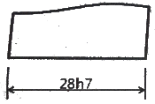
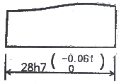
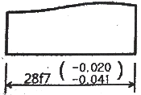
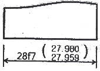
(정답률: 70%)
38. 표제란에 기입할 사항으로 거리가 먼 것은?
- 도면 번호
- 도면 명칭
- 부품기호
- 투상법
(정답률: 52%)
39. 도면에 나타난 그림의 크기가 치수와 비례하지 않을 때 표시하는 방법 중 틀린 것은?(오류 신고가 접수된 문제입니다. 반드시 정답과 해설을 확인하시기 바랍니다.)
- 치수 아래쪽에 굵은 실선을 긋는다.
- "비례하지 않음"으로 표시한다.
- NS로 기입한다.
- 치수를 ( ) 안에 넣는다.
(정답률: 66%)
40. 다음 그림을 15H7-m6의 구멍과 축에 중간 끼워 맞춤을 나타낸 것으로 최대 죔새를 A, 최대 틈새를 B라 할 때 옳은 것은?
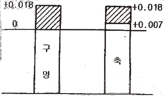
- A=0.018, B=0.011
- A=0.011, B=0.018
- A=0.018, B=0.025
- A=0.011, B=0.025
(정답률: 70%)
41. 단면의 표시와 단면도의 해칭에 관한 설명 중 틀린 것은?
- 일반적으로 단면부의 해칭은 생략하여 도시하고 특별한 경우는 예외로 한다.
- 인접한 부품의 단면은 해칭의 각도 또는 간격을 달리하여 구별할 수 있다.
- 해칭하는 부분에 글자 등을 기입하는 경우, 해칭을 중단할 수 있다.
- 해칭선의 각도는 일반적으로 주된 중심선에 대하여 45°로 하여 가는 실선으로 등간격으로 그린다.
(정답률: 54%)
42. 제1각법과 제3각법의 설명 중 틀린 것은?
- 제1각법은 물체를 1상한에 놓고 정투상법으로 나타낸 것이다.
- 제1각법은 눈→투상면→물체의 순서로 나타낸다.
- 제3각법은 물체를 3상한에 놓고 정투상법으로 나타낸 것이다.
- 한 도면에 제1각법과 제3각법을 같이 사용해서는 안된다.
(정답률: 77%)
43. 기하 공차의 기호와 공차의 명칭이 서로 맞는 것은?
- - : 진직도 공차
- ◎ : 위치도 공차
- ○ : 원통도 공차
- ∠ : 동심도 공차
(정답률: 74%)
44. IT공차 등급에 대한 설명 중 틀린 것은?
- 공차등급은 IT기호 뒤에 등급을 표시하는 숫자를 붙여 사용한다.
- 공차역의 위치에 사용하는 알파벳은 모든 알파벳을 사용할 수 있다.
- 공차역의 위치는 구멍인 경우 알파벳 대문자, 축인 경우 알파벳 소문자를 사용한다.
- 공차등급은 IT01부터 IT18까지 20등급으로 구분한다.
(정답률: 75%)
45. 컴퓨터 도면관리 시스템의 일반적인 장점을 잘못 설명한 것은?
- 여러가지 도면 및 파일의 통합관리체계를 구축 가능하다.
- 반영구적인 저장 매체로 유실 및 훼손의 염려가 없다.
- 도면의 질과 정확도를 향상시킬수 있다.
- 정전 시에도 도면 검색 및 작업을 할 수 있다.
(정답률: 83%)
46. 일반적으로 스퍼 기어의 요목표에 기입하는 사항이 아닌 것은?
- 치형
- 잇수
- 피치원 지름
- 비틀림 각
(정답률: 64%)
47. 볼 베어링 6203 ZZ에서 ZZ는 무엇을 나타내는가?
- 실드 기호
- 내부 틈새 기호
- 등급 기호
- 안지름 기호
(정답률: 65%)
48. 다음 중 관의 결합방식 표시방법에서 유니언식을 나타내는 것은?
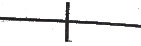
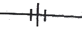
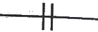
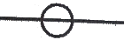
(정답률: 80%)
49. 나사용 구멍이 없고 양쪽 둥근 형 평행 키의 호칭으로 옳은 것은?
- P-A 25 x 90
- TG 20 x 12 x 70
- WA 23 x 16
- T-C 22 x 12 x 60
(정답률: 55%)
50. 다음 중 축의 도시방법에 대한 설명으로 틀린 것은?
- 축은 길이 방향으로 절단하여 단면 도시하지 않는다.
- 긴 축은 중간 부분을 생략해서 그릴 수 있다.
- 축에 널링을 도시할 때 빗줄인 경우는 축선에 대하여 45°로 엇갈리게 그린다.
- 축은 일반적으로 중심선을 수평 방향으로 놓고 그린다.
(정답률: 65%)
51. 기어의 제도방법 중 틀린 것은?
- 축 방향에서 본 이끝원은 굵은 실선으로 표시한다.
- 축 방향에서 본 피치원은 가는 1점 쇄선으로 표시한다.
- 서로 물려 있는 한 쌍의 기어에서 맞물림부의 이끝원은 가는 실선으로 표시한다.
- 베벨 기어 및 웜 휠의 축 방향에서 본 그림에서 이뿌리원은 생략하는 것이 보통이다.
(정답률: 53%)
52. 벨트 풀리의 도시방법 설명으로 틀린 것은?
- 모양이 대칭형인 벨트 풀리는 그 일부분만을 도시할 수 있다.
- 암은 길이 방향으로 절단하여 그 단면을 도시할 수 있다.
- 암은 단면형은 도형의 안이나 밖에 회전 단면을 도시할 수 있다.
- 벨트 풀리의 홈 부분 치수는 해당하는 형별, 호칭지름에 따라 결정된다.
(정답률: 71%)
53. 좌 2줄 M50x3-6H는 나사 표시방법의 보기이다. 리드는 몇 ㎜인가?
- 3
- 6
- 9
- 12
(정답률: 63%)
54. 다음은 단속필릿 용접부의 주요 치수를 나타낸 기호이다. 기호에 대한 설명으로 틀린 것은?
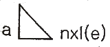
- a : 목 두께
- n : 용접부의 개수
- l : 목 길이
- e : 인접한 용접부간의 간격
(정답률: 50%)
55. 스프링 제도에 대한 설명으로 맞는 것은?
- 오른쪽 감기로 도시할 때는 "감긴 방향 오른쪽" 이라고 반드시 명시해야 한다.
- 하중이 걸린 상태에서 그리는 것을 원칙으로 한다.
- 하중과 높이 및 처짐과의 관계는 선도 또는 요목표에 나타낸다.
- 스프링의 종류와 모양만을 도시할 때에는 재료의 중심 선만을 가는 실선으로 그린다.
(정답률: 58%)
56. 다음 중 육각볼트의 호칭이다. ③이 의미하는 것은?
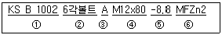
- 강도
- 부품등급
- 종류
- 규격번호
(정답률: 62%)
57. 3차원 물체의 외부 형상뿐만 아니라 중량, 무게중심, 관성모멘트 등의 물리적 성질도 제공할 수 있는 형상 모델링은?
- 와이어 프레임 모델링
- 서피스 모델링
- 솔리드 모델링
- 곡면 모델링
(정답률: 76%)
58. 중앙처리장치(CPU)와 주기억장치 사이에서 원활한 정보의 교환을 위하여 주기억장치의 정보를 일시적으로 저장하는 고속 기억장치는?
- floopy disk
- CD-ROM
- cache memory
- coprocessor
(정답률: 82%)
59. 그림과 같이 위치를 알 수 없는 점 A에서 점 B로 이동하려고 한다. 어느 좌표계를 사용해야 하는가?
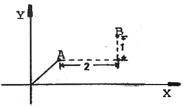
- 상대 좌표
- 절대 좌표
- 절대 극 좌표
- 원통 좌표
(정답률: 79%)
60. CAD 시스템의 입력장치에 해당하지 않는 것은?
- 키보드(keyboard)
- 마우스(mouse)
- 디스플레이(display)
- 라이트 펜(light pen)
(정답률: 88%)